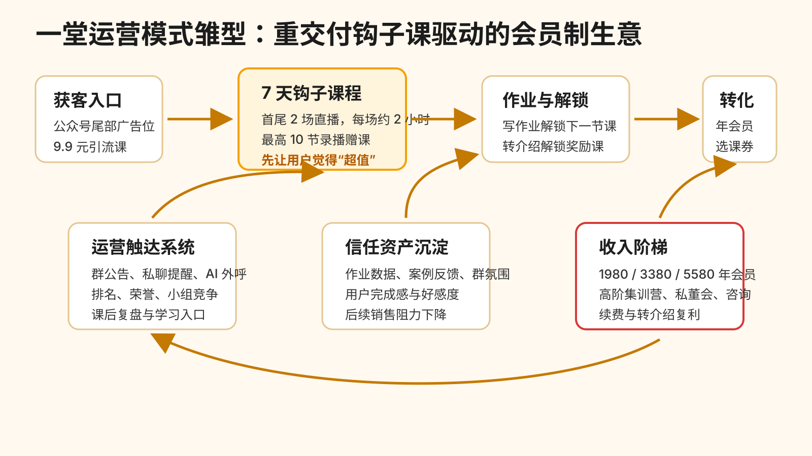
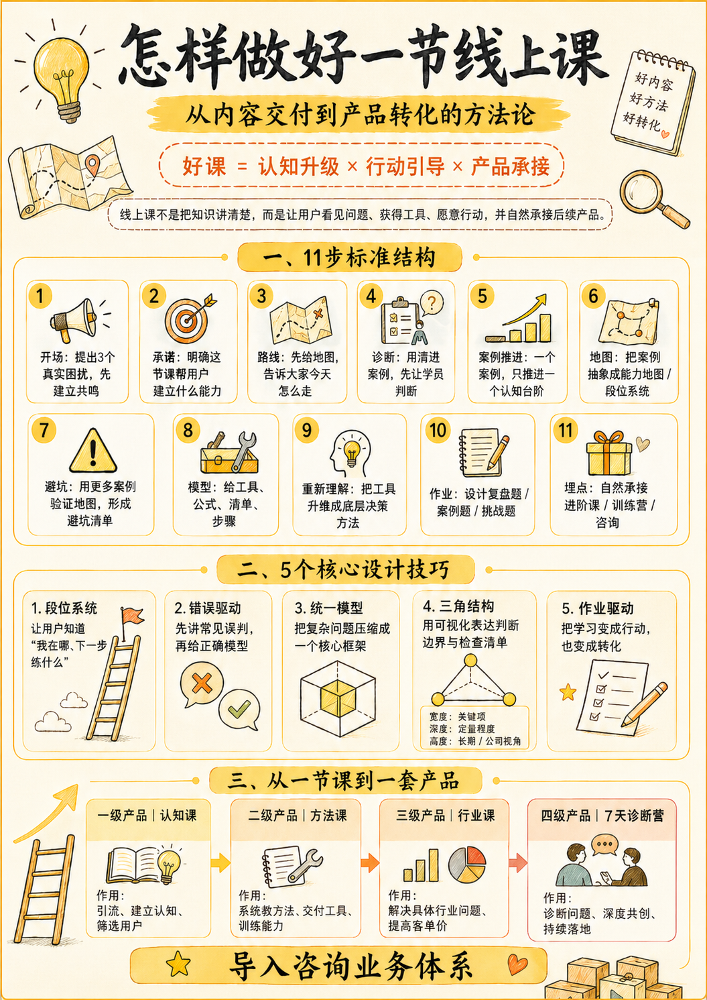
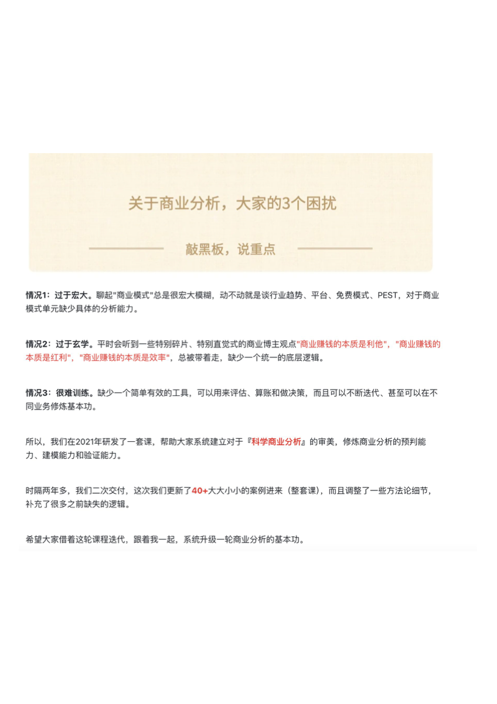
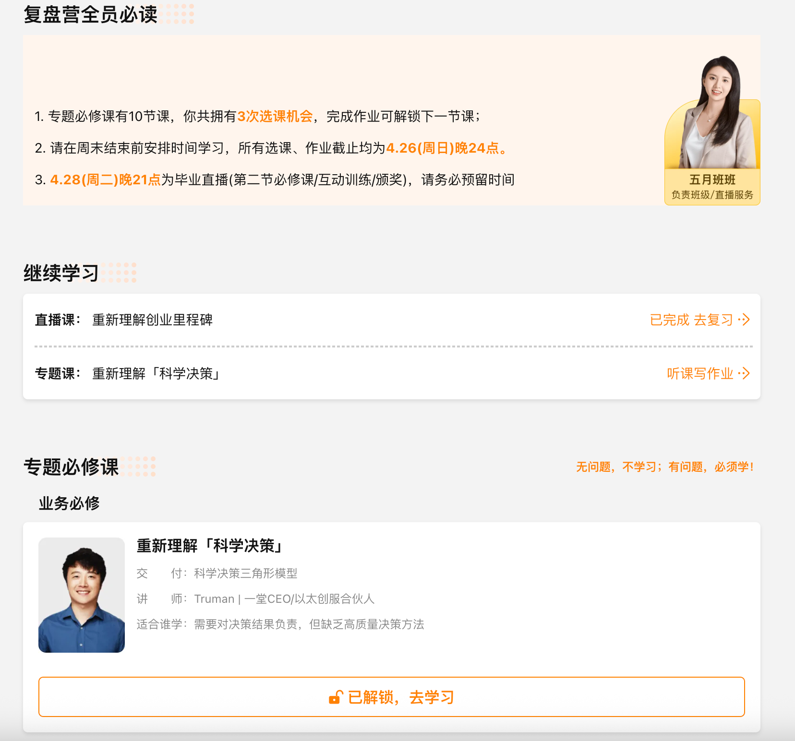
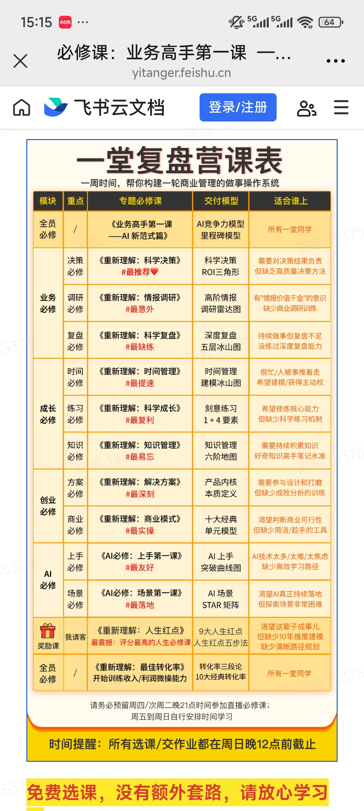
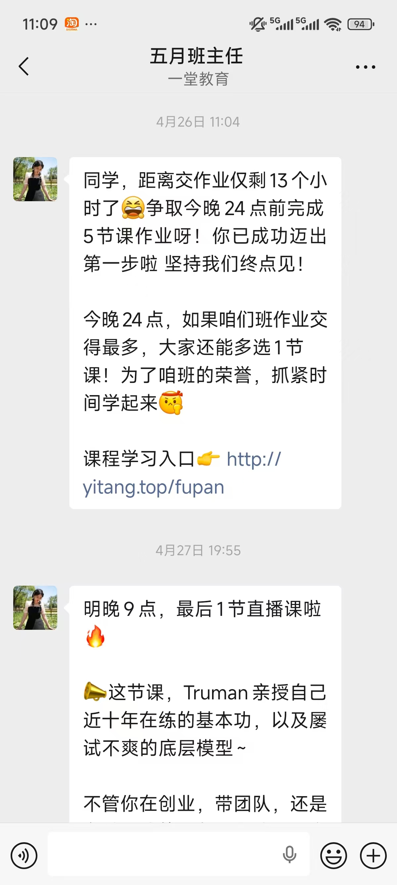
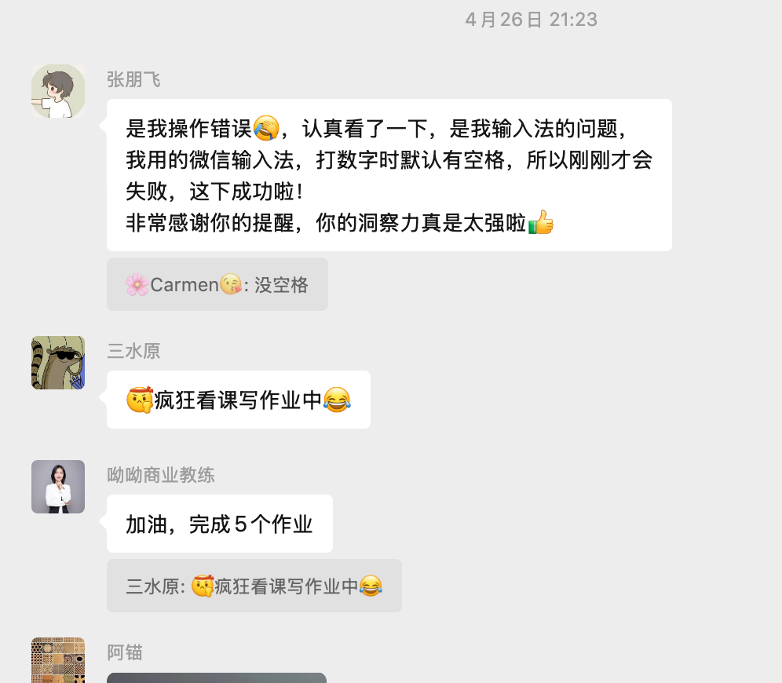
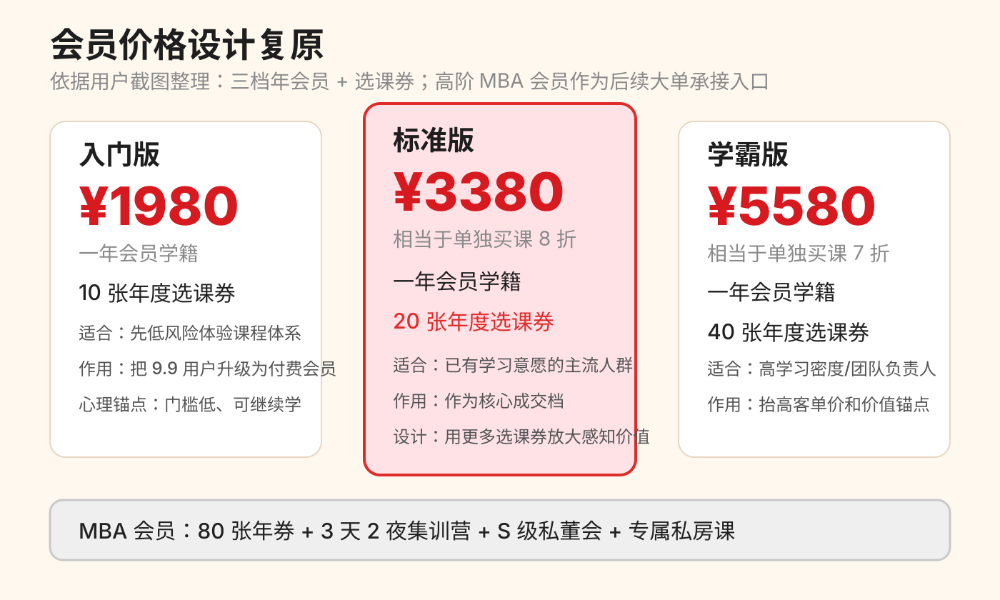

一堂运营模式与商业模式拆解
生成日期：2026-05-09
分析对象：一堂 9.9 元引流课、7 天复盘营、会员价格体系与课后运营动作
资料来源：一堂官网、用户参课记录、课程内容拆解图、群运营截图、会员定价截图信息、复盘营课表与解锁页截图
1. 一句话结论
一堂这套模式的核心不是“低价课强卖正价课”，而是“重交付钩子课驱动的会员制生意”：先用 9.9 元低价课程筛出愿意学习的创业者/业务负责人，再用 7 天高密度交付、作业解锁、转介绍、班主任触达和群体氛围建立信任，最后用相对轻的会员转化承接长期学习需求。
最值得拆的是它的反常识之处：前端钩子课程很重，后端成交动作反而不重。用户在第一阶段已经获得了明显超预期的体验，因此最终转化不必依赖强追单，而是依赖好感、信任、持续学习焦虑和会员权益的价值感。

2. 观察到的完整用户路径
| 阶段 | 用户动作 | 一堂动作 | 关键目的 |
|---|---|---|---|
| 获客 | 在公众号尾部广告位看到 9.9 元引流课 | 用低价直播课承接外部流量 | 降低尝试门槛，筛出有创业/管理/业务提升需求的人 |
| 课前 | 入群、等待直播 | 群发提醒、AI 外呼、私聊确认“参加” | 提升到课率，并让用户做公开/私下承诺 |
| 第 1 天直播 | 21:00-23:00 听首场直播 | 2 小时以上直播，交付完整方法论、案例、工具包、回放 | 让用户获得第一次“超值感” |
| 第 2 天复盘 | 看回放/文稿/专题课，进入 H5 学习页 | 群内发复盘入口，说明作业和解锁规则 | 把单场课变成训练营 |
| 第 3-5 天 | 写作业、看录播、参与讨论 | 高频催交、排名、小组竞争、群内反馈 | 拉高参与度，制造完成感和同伴压力 |
| 第 7 天毕业直播 | 参加最后一场直播 | 先讲课，再颁奖，最后讲会员价格和赠课 | 轻销售完成付费承接 |
| 课后 | 选择是否购买会员 | 当天付款赠课，但没有强追单 | 维持好感，避免破坏前端信任资产 |
3. 内容设计：用泛化模型服务创业者
一堂的引流课不是“碎片知识拼盘”，而是把内容包装成创业者可复用的底层模型。它的内容有三个特点：
- 方法论密度高：以科学决策、商业分析、复盘、时间管理、AI 场景等模型为核心，用户即便不买会员，也会觉得 9.9 元超值。
- 泛化程度高：内容不绑定某个狭窄行业，而是服务创业者、业务负责人、管理者共同面对的问题，例如决策、调研、转化率、商业模式、团队执行。
- 可产品化：每节内容都被命名为一个“重新理解/AI 必修”的模块，既像课程目录，也像能力地图，天然适合会员制长期售卖。


4. 钩子课程设计：重到像一个小型正价营
这套 9.9 元引流课的钩子非常重：
| 钩子组件 | 具体设计 | 对转化的作用 |
|---|---|---|
| 低价门槛 | 9.9 元进入 7 天营 | 筛出愿意付费且愿意学习的人，避免纯免费流量 |
| 首尾直播 | 2 场 21:00-23:00 直播，每场约 2 小时 | 首场建立信任，尾场完成价值峰值和会员承接 |
| 录播赠课 | 最高 10 节，每节多在 2 小时以上 | 制造“投入远高于价格”的感知 |
| 作业解锁 | 完成作业解锁下一节课 | 把学习从被动观看变成主动行动 |
| 转介绍解锁 | 邀请朋友/转发海报可获得奖励课 | 用课程权益做低成本裂变 |
| 班主任运营 | 群公告、私聊、提醒、排名、复盘入口 | 保证完成率和触达频次 |
这不是普通引流课，而是“付费筛选 + 训练营体验 + 会员预演”。用户在 7 天里已经体验了直播、回放、作业、录播、班主任、课程目录和社群氛围，因此最后销售会员时，不是在卖一个陌生产品，而是在邀请用户延长一个已经体验过的学习系统。


5. 运营设计：高频触达但低压销售
运营动作的核心是“让用户持续参与”，不是“让用户立刻付款”。目前观察到的动作包括：
- 课前提醒：前一天群发、当天 AI 外呼、直播前半小时群发，强调席位、直播入口和课程价值。
- 私聊承诺：用“回复我【参加】”让用户做一个小承诺，后续提醒就不显得突兀。
- 课中暖场：班主任提前 10 分钟暖场，cue 后续流程，引导用户关注完整训练营。
- 课后复盘：当晚发学习链接，告诉用户回放、文稿、专题课、作业都在 H5 里。
- 作业催交：第 3-5 天持续提醒，配合班级排名、荣誉感和“多选一节课”激励。
- 群内氛围：让用户看到别人也在写作业、也在遇到问题、也在完成任务。
- 最后一场提醒：强调“没有回放和文稿”，提高最后直播到课率。
用户收到的私聊话术如下：
明晚 9 点，最后 1 节直播课啦。
这节课，Truman 亲授自己近十年在练的基本功，以及屡试不爽的底层模型。
不管你在创业，带团队，还是在做具体的业务，都值得你学习。
一定来听直播，Truman 带你现场练习，切身感受模型的力量。
没有回放和文稿啦。
回复我【参加】，明晚提醒你上课。
这段话的设计很完整：先提醒时间，再抬高老师和内容价值，再扩大适用人群，最后用“无回放”制造到课理由，用“回复参加”建立承诺。


6. 转化设计：销售动作轻，但价值铺垫重
最后一场直播的转化方式是：先讲课约 1 小时，再颁奖约 40 分钟，最后讲会员价格；当天付款可赠课。这个节奏说明一堂没有把最后直播做成纯销售场，而是把销售嵌在“毕业感”和“价值峰值”之后。
已知会员价格设计如下：
| 档位 | 价格 | 核心权益 | 设计意义 |
|---|---|---|---|
| 入门版 | 1980 元 | 一年会员学籍 + 10 张年度选课券 | 低门槛承接，适合刚建立信任的人 |
| 标准版 | 3380 元 | 一年会员学籍 + 20 张年度选课券 | 主推档，兼顾客单价和接受度 |
| 学霸版 | 5580 元 | 一年会员学籍 + 40 张年度选课券 | 高价值锚点，提高整体价格带 |
| MBA 会员 | 未完整听到 | 80 张年券 + 3 天 2 夜集训营 + S 级私董会 + 专属私房课 | 高阶产品入口，用于后续深度经营 |

这个价格结构有三个关键点：
- 从卖单课转为卖年度学习权：用户买的不是一门课，而是一年内继续学习的资格和选课券。
- 用选课券放大价值感：10/20/40 张券把价格从“贵不贵”转移到“能学多少”。
- 预留高阶产品空间：MBA、集训营、私董会、咨询能够继续承接高 LTV 用户。
7. 为什么“轻追单”仍然可能有效
一堂的转化动作不重，甚至没有明显追单，但用户好感度高。这种模式成立的前提是：前端课程本身已经完成了大量销售工作。
| 前端动作 | 隐含销售作用 |
|---|---|
| 2 小时高密度直播 | 证明老师有真东西 |
| 7 天陪跑 | 证明组织有服务能力 |
| 作业解锁 | 证明课程能促成行动 |
| 群内讨论 | 证明不是单向灌输 |
| 课表展示 | 证明后续产品有系统性 |
| 颁奖/排名 | 证明用户可以获得正反馈 |
| 赠课/选课券 | 证明买会员后不是单点消费 |
所以最后一场直播不需要强硬追单，因为用户已经在前 7 天里完成了“认知被打开、行为被带动、产品被体验、信任被积累”的全过程。
8. 商业模式设计雏型
如果把一堂抽象成一个可复用的商业模式，它不是“课程售卖模型”，而是“创业者能力会员模型”。
8.1 目标用户
核心用户是创业者、业务负责人、管理者、自由职业者和正在转型的人。他们的共同特点是：
- 愿意为认知、模型、方法论付费。
- 面临复杂问题，但缺少结构化工具。
- 对“能马上用于业务”的内容敏感。
- 不一定追求学历证书，更重视实战、案例、同伴和持续陪跑。
8.2 产品阶梯
| 层级 | 产品形态 | 价格/价值 | 主要任务 |
|---|---|---|---|
| 流量入口 | 公众号广告、内容投放、转介绍海报 | 外部流量成本 | 找到有创业/业务焦虑的人 |
| 低价筛选 | 9.9 元直播训练营 | 低价付费 | 筛选愿意行动的人，过滤纯白嫖 |
| 信任交付 | 7 天营、2 场直播、录播赠课、作业解锁 | 超预期体验 | 建立信任和完成感 |
| 主力变现 | 年会员 + 选课券 | 1980/3380/5580 | 把单次学习变成年度学习关系 |
| 高阶变现 | 集训营、私董会、咨询、MBA 会员 | 高客单价 | 承接高意愿、高支付能力用户 |
| 复利增长 | 作业案例、口碑、转介绍、续费 | 降 CAC、提 LTV | 形成内容和社群资产 |
8.3 核心能力
这套模型真正的壁垒不只是“课程多”，而是四个能力叠加：
- 内容产品化能力：把复杂商业问题拆成模型、工具、案例和作业。
- 训练营运营能力：让用户在 7 天内持续参与，而不是听完就走。
- 社群信任构建能力：用群氛围、作业、排名和班主任触达制造现场感。
- 会员承接能力：用年度选课券承接长期学习，而不是一次性卖课。
8.4 收入结构推断
| 收入来源 | 可能作用 |
|---|---|
| 9.9 元引流课 | 不是利润中心，主要用于筛选与回收一部分流量成本 |
| 年会员 | 主力现金流，依靠课程库和选课券放大价值感 |
| 高阶会员/私董会/集训营 | 高毛利与高 LTV 来源 |
| 咨询/企业服务 | 从个人创业者延伸到团队或组织需求 |
| 续费 | 内容库和学习习惯形成后，续费比新获客更划算 |
| 转介绍 | 通过奖励课降低获客成本 |
9. 可复用的设计原则
- 钩子课不能只给“信息”，要给“体验”：直播、工具、作业、反馈、解锁和同伴感都要出现。
- 低价课要收费：9.9 元的意义不在收入，而在筛掉低意愿用户。
- 转化前先让用户行动：写过作业的人，比只听课的人更容易继续购买。
- 赠课要绑定行为：赠课不是白送，而是用来换作业、转介绍和完课。
- 销售不必重，但承接要清楚：用户要知道下一步可以买什么、为什么买、买了如何继续学。
- 会员制要卖“学习权”和“成长路径”：选课券比单课更适合承接泛化方法论内容。
- 社群运营要制造“大家都在推进”的证据：排名、作业截图、讨论和班主任反馈都在降低用户退出概率。
10. 风险与短板
| 风险 | 表现 | 可能影响 |
|---|---|---|
| 前端交付过重 | 7 天 + 2 场直播 + 最高 10 节赠课 + 高频运营 | 如果转化率不够，成本压力会很大 |
| 内容泛化 | 方法论和思维框架适用面广，但不够垂直 | 对明确结果导向用户，付费理由可能不够强 |
| 会员差异不清 | 用户没有明显听到 1980/3380/5580 的差异解释 | 可能导致用户只选低档或延迟决策 |
| 依赖老师 IP | Truman 亲授是主要信任来源 | 扩张时需要更多讲师复制方法论和信任 |
| 轻追单依赖好感 | 不强追单保护体验，但会放弃一部分犹豫订单 | 需要更强的课后内容触达和续养机制补足 |
11. 最终雏型：可直接参考的商业设计
一堂可被抽象为下面这个模型：
公众号/内容广告获客 → 9.9 元低价筛选 → 7 天重交付训练营 → 作业与转介绍解锁 → 轻销售年会员 → 选课券持续学习 → 高阶集训营/私董会/咨询 → 作业案例与口碑反哺获客。
如果要借鉴，不建议只学“9.9 引流课”或“群里催作业”。真正值得学的是它的三层设计：
- 内容层：用模型和案例让创业者觉得“这能解决我的复杂问题”。
- 运营层：用作业、解锁、群氛围和私聊承诺把用户带入行动。
- 转化层：用年度会员和选课券承接长期学习，用高阶产品承接高价值用户。
这套模式的本质是：用一次高质量的低价交付，换取用户对长期学习关系的信任。